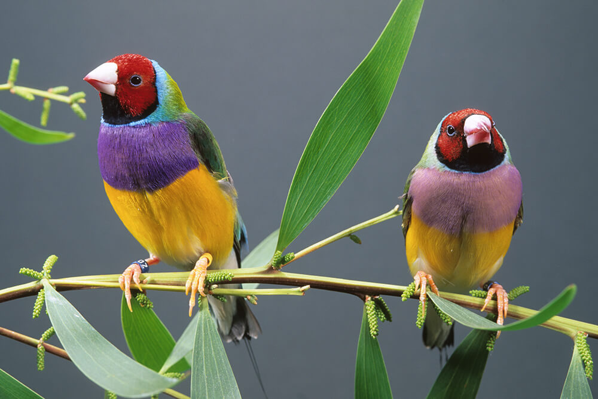
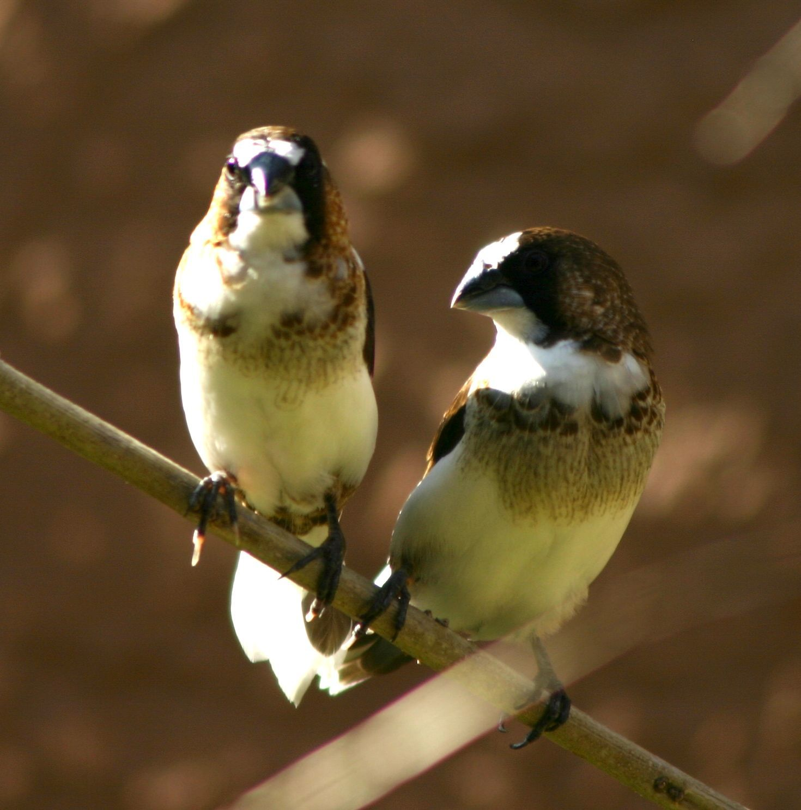
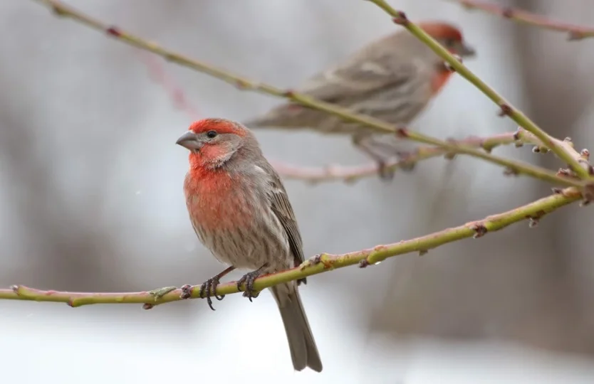
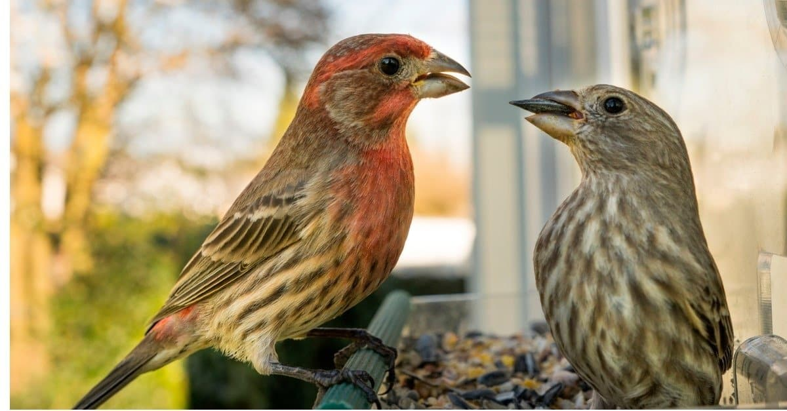
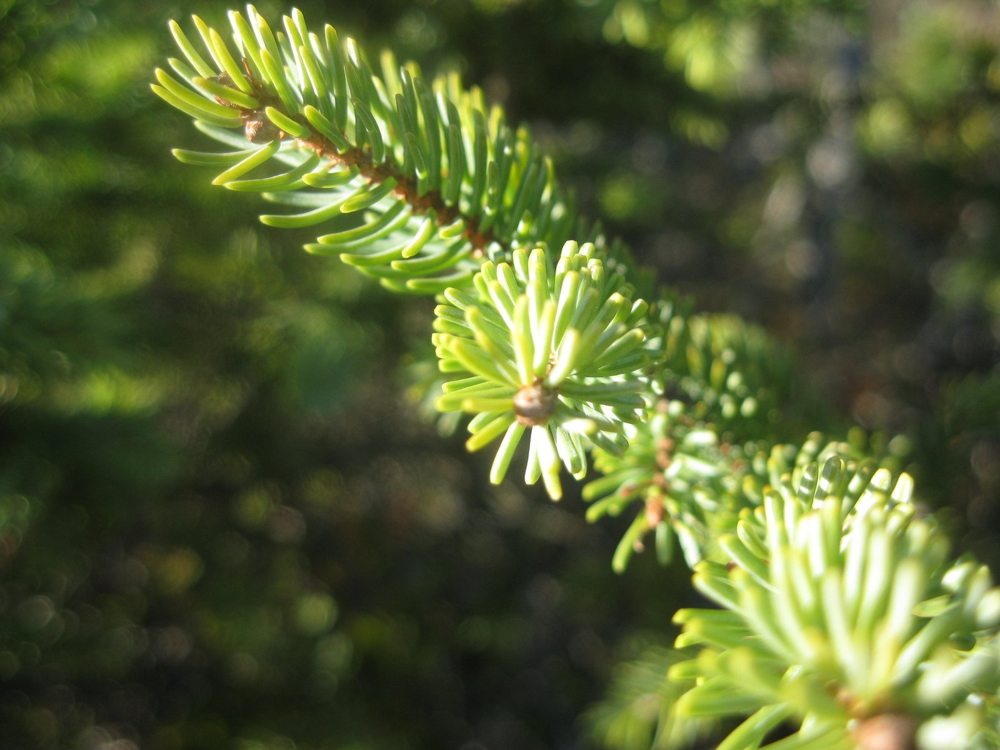

A Rainbow of Colors
Finches are known for their stunning variety of colors and patterns. From the bright yellows and oranges of the American Goldfinch to the striking red hues of the Zebra Finch, these birds display a palette as vibrant as the rainbow itself. Each species has its unique color combination, making them a joy to spot in the wild or observe up close. The Gouldian Finch, for example, is often hailed as one of the most beautiful birds in the world. Native to Australia, its head can be red, black, or yellow, and its plumage is a dazzling combination of green, blue, and purple. Seeing one of these birds in person is like witnessing a living jewel.
Natural Songsters
In addition to their beauty, finches are also known for their pleasant songs. Their soft, cheerful chirps and warbles are a soothing soundtrack to gardens and forests. Finches use these songs to communicate with each other, attract mates, and establish territory. Their melodious calls are a favorite among birdwatchers, and many people enjoy keeping finches as pets specifically for their lovely voices. The Society Finch, a popular pet species, is particularly known for its harmonious nature and the calming, sweet sounds it produces. For bird lovers, having a pair of finches in the home can bring peace and positivity to the atmosphere.
Finches in Nature
Finches are found in a wide range of habitats, from deserts to tropical rainforests. One of the most famous groups of finches is the "Darwin's finches," a group of about 15 species found on the Galápagos Islands. These birds were integral to Charles Darwin's development of the theory of natural selection. Each species of finch on the islands has a beak shape adapted to its particular diet, showcasing the incredible adaptability of these birds. In North America, the American Goldfinch is a common sight, flitting around fields, meadows, and backyards, especially where sunflower and thistle seeds are abundant. Their energetic, bouncing flight and distinctive call bring joy to anyone lucky enough to see them.
Easy to Care for Pets
For those who wish to enjoy the beauty of finches up close, they also make wonderful pets. They are relatively easy to care for and can thrive in indoor aviaries or bird cages. Unlike larger pet birds, finches don’t need a lot of attention and are content with the company of their kind. This makes them ideal for people who want to enjoy the company of birds but may not have the time to dedicate to more demanding species. Many finch species, like the Zebra Finch or the Gouldian Finch, can live harmoniously in pairs or small groups, creating a lively, peaceful environment in the home.
Conservation Efforts
While many species of finches are thriving, some are unfortunately at risk due to habitat loss and environmental changes. The Galápagos finches, for instance, face threats from invasive species and climate change. Conservation efforts are underway to protect these iconic birds and their habitats. Organizations dedicated to bird conservation are working tirelessly to ensure that future generations will continue to enjoy the beauty and diversity of finches. Simple actions, such as planting native trees and flowers or providing feeders with the right seeds, can help support local finch populations and contribute to conservation efforts.
A Joy for Bird Lovers
Whether observed in the wild, admired in a backyard, or cared for as pets, finches bring color, song, and happiness into the lives of those who appreciate them. Their resilience, adaptability, and vibrant beauty are a reminder of nature’s wonder. For bird enthusiasts, few experiences are as rewarding as watching finches soar, sing, and thrive. These remarkable little birds have certainly earned their place in the spotlight of the avian world.